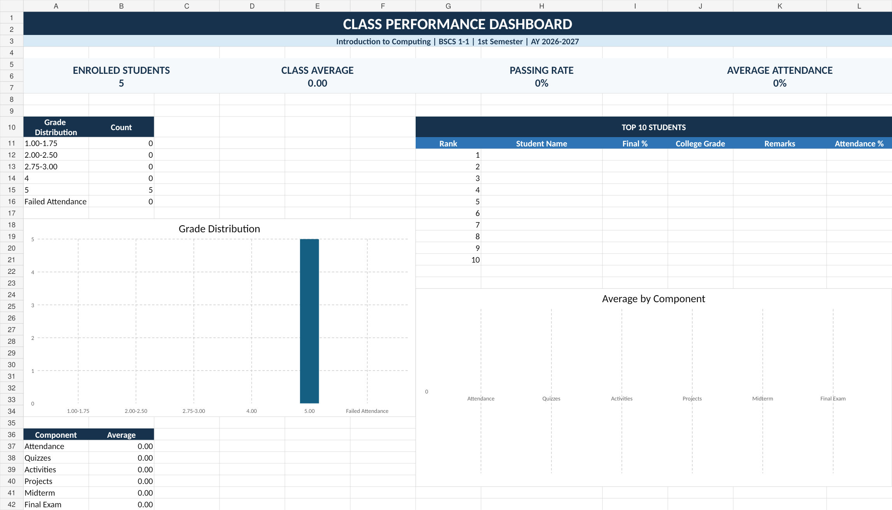
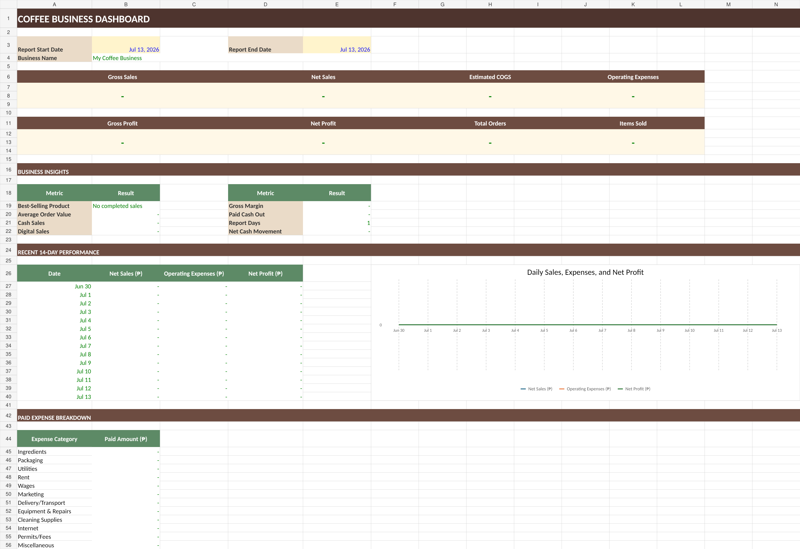
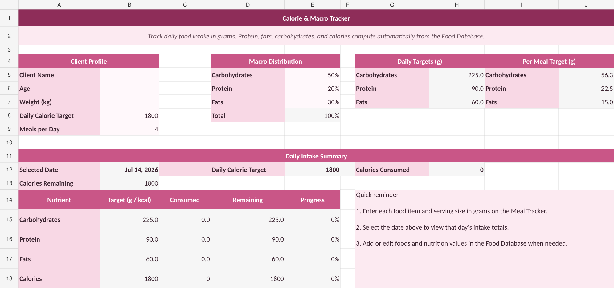
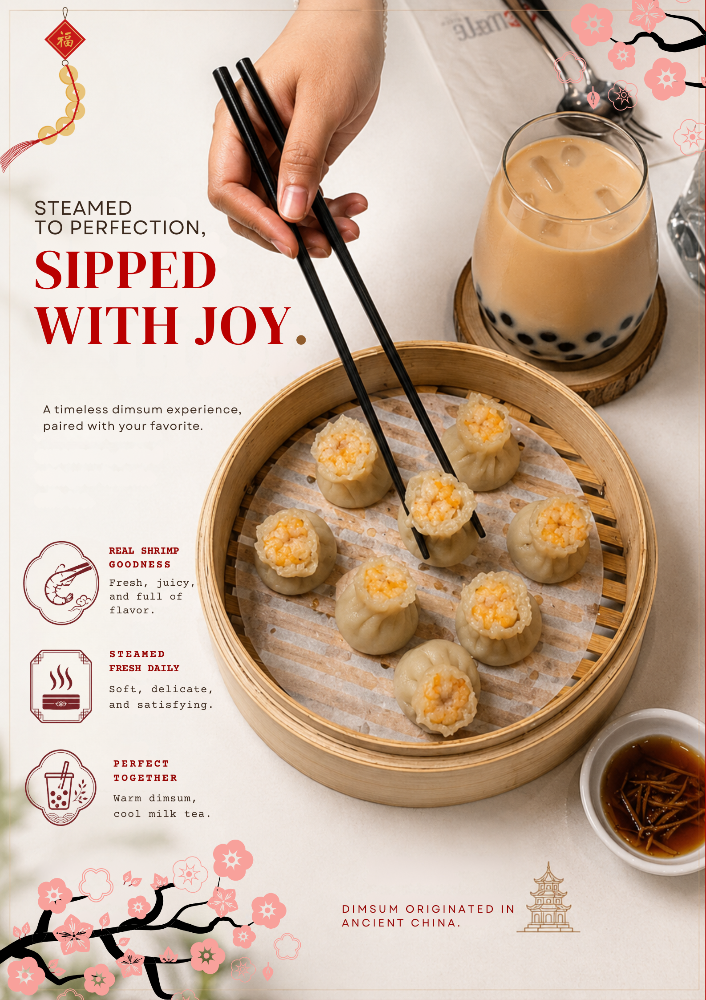

{kind=link}
Office & Data Tools
Microsoft Excel, Word, PowerPoint, Google Sheets, Docs, Slides, data entry, data gathering, and information verification.
I am Audrey Justine Ruth V. Llamas, a graduating BS Computer Science student with an ABM background. I combine technical skills, careful information checking, spreadsheet organization, web design, and visual communication to support efficient operations.
I have experience in documentation, data gathering, patient information review, web development, and graphic design. I am proficient in Microsoft Office, Google Workspace, and AI-assisted productivity tools, with familiarity with Nespresso coffee machine operation.
My Computer Science training helps me approach tasks logically, while my ABM background supports my understanding of records, business processes, and basic accounting. I work carefully, communicate clearly, and adjust quickly when responsibilities or workflows change.
Polytechnic University of the Philippines
General de Jesus College • With Honors
Focused on the requirements of technical support, aftersales, documentation, and office-based internship roles.
Microsoft Excel, Word, PowerPoint, Google Sheets, Docs, Slides, data entry, data gathering, and information verification.
Patient information checking, record organization, file management, confidentiality, and accurate preparation of notes.
HTML, CSS, basic web design, graphic design, Canva-style layouts, and AI-assisted productivity workflows.
Basic accounting principles from ABM and familiarity with Nespresso coffee machine operation and routine care.
These projects demonstrate my skills in Microsoft Excel, automated formulas, dashboards, data organization, record management, and user-friendly spreadsheet design.

View Excel dashboardAn automated college gradebook designed to manage student information, attendance, assessment scores, final grades, academic remarks, and overall class performance.

View Excel dashboardA complete coffee business management system for recording customer orders, monitoring expenses, managing inventory, tracking cash flow, and reviewing daily profitability.

View Excel dashboardAn automated nutrition tracker that calculates calories, carbohydrates, protein, and fats based on food selections and serving sizes entered in grams.
A collection of visual materials demonstrating my skills in layout design, typography, product presentation, brand consistency, and promotional storytelling.

A clean product-focused campaign presenting a three-step acne-care routine: cleanse, hydrate, and protect. The design uses a structured layout, strong typography, brand colors, and clear product benefits to make the information easy to understand.

A warm and playful café poster combining coffee culture with pet-friendly storytelling. The design uses soft neutral tones, oversized editorial typography, handwritten details, and humorous copy to create a friendly and memorable brand personality.

A Chinese-inspired food campaign featuring freshly steamed shrimp dimsum paired with milk tea. The composition combines realistic product imagery, traditional decorative elements, promotional copy, and a warm color palette to create an inviting dining experience.
Reviewed patient and treatment details for accuracy and completeness, then prepared organized treatment notes while handling confidential information responsibly.
Taught basic HTML and CSS through structured lessons and exercises, guided a senior high school student in creating web pages, and monitored learning progress.
Collaborated in developing and documenting a web-based learning management system, applied HTML and CSS, and assisted in checking layout and usability.
I am open to internship opportunities where I can learn new systems, support accurate workflows, and contribute organized technical and administrative work.
{kind=link}
{kind=link}
{kind=link}
{kind=link}